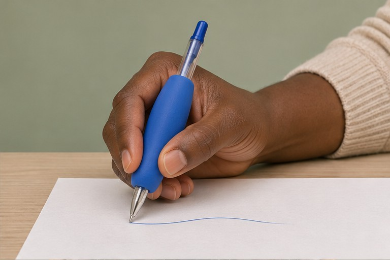
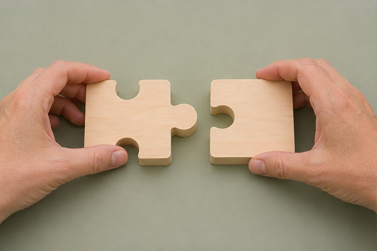
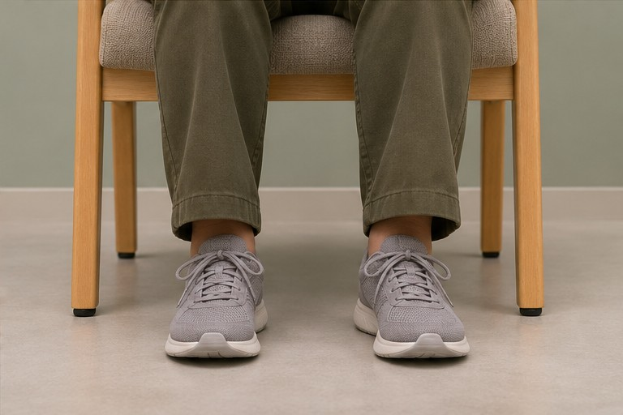
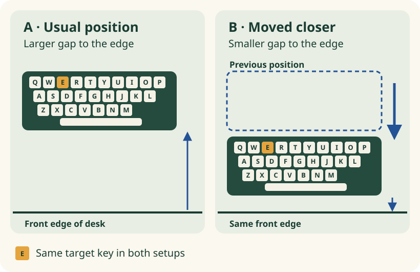
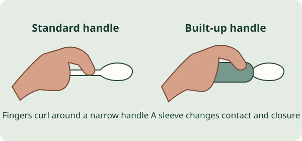

Type a messageCompare how you reach and select keys.Explore this task
Type a messageCompare how you reach and select keys.Explore this task What would you like to explore today?
Explore how everyday tools, environments and assistive design can accommodate different movement abilities.
Type a messageCompare how you reach and select keys.Explore this task  Use a spoonSee how handle shape changes the grip.Explore this task
Use a spoonSee how handle shape changes the grip.Explore this task 
Write and drawExplore grip, support and alternative ways to make a mark.Explore this task
Handle objectsExplore contact, alignment and stable surfaces.Explore this task
Explore balance and mobilityExplore support, body position and accessible environments.Explore this taskType a message
Learning objective. Explain how target size and reach affect key selection.
1. See the task
2. Understand the movement
A hand moves towards a key, targets it and releases it. Greater reach, smaller targets and unintended repeats can change the demands of the task.
Explore the stages of a key press
3. Explore an adaptation
Larger on-screen keys change target size. Keyboard position changes reach, while dictation offers a different input method. Repeat filtering can reject quickly repeated activations, including intentional ones.

4. Try an optional activity
Try untimed typing practice
my pace is mine
Nothing is timed. Practice text stays in this open page.
My usual setup
Use your own keyboard, device input or the standard practice keys. The lab never changes device settings.
Set this to 0 to turn filtering off. The filter can also suppress intentional repeated characters. It applies only to repeated character keys and the practice buttons here. Backspace remains available. Your device settings stay the same.
Only pressing “Record comparison” saves a journal entry on this browser. No performance claim is made.
5. Reflect on the experience
Which setup gave you more control or felt more comfortable? Use the observation fields above to keep your own notes.
Use a spoon
Learning objective. Describe how handle diameter can change finger position and contact.
1. See the task
2. Understand the movement
The fingers close around the handle and the hand turns to orient the bowl. The width and shape of the handle change where the fingers make contact.
3. Explore an adaptation
A built-up handle changes grip diameter and contact area. An angled handle changes the relationship between the hand and the bowl. Weight, shape and preference also matter.

4. Try an optional activity
Explore an empty-spoon demonstration
Observe how two handle shapes change the grip. Choose a preferred hand in the demonstration. This activity concerns handling an empty utensil. Eating and swallowing require separate individual guidance.
5. Reflect on the experience
Where would your fingers contact each handle? What else, such as weight or angle, might matter to you?
Write and draw
Learning objective. Identify one way to change the demands of making a mark.
1. See the task
2. Understand the movement
The forearm positions the hand. The fingers and wrist guide the pen, while friction between the paper and table helps determine whether the paper slides.
3. Explore an adaptation
A wider pen grip changes finger closure. Forearm support can change how the hand is positioned. A non-slip surface may steady the paper, and a digital pad offers pointer or button input.

4. Try an optional activity
Open the digital drawing pad
The guide is a visual option, not a shape you must match.
The drawing is temporary until you download it. No drawing data is uploaded.
5. Reflect on the experience
Did your chosen input method make it easier to place a mark? What would you keep or change?
Handle objects
Learning objective. Identify how object shape and surface support affect a simple connection.
1. See the task
2. Understand the movement
Contact comes first. Sliding and turning bring matching edges into alignment. Object shape can change which surfaces are easy to contact and hold.
3. Explore an adaptation
A larger contact surface, easy-fit geometry or a stable non-slip mat changes how a connection can be made. Extra support can let one hand guide a piece while the environment steadies the other.

4. Try an optional activity
Explore light objects and easy-fit connections
Observe the illustrated sequence or, if suitable for you, use large, light, easy-fit pieces on a stable surface within comfortable reach. Stop if connecting the pieces needs force.
Open the object handling lesson · See the captioned tutorials
Read about planning a heavier task
A pathway toward a heavier lifting goal
- Define the real object, height, distance, grasp and support needed with a physiotherapist or OT.
- Begin only with the rehearsal and load that they assess as appropriate. The tutorial shows a light empty-box rehearsal.
- If strengthening is appropriate, agree on progression, technique, assistance and stop signs with the clinician. The site does not set a universal safe weight.
- Consider reducing the load, using an assessed transfer aid, or asking for help. Do not carry a load when you need those hands for balance or a mobility aid.
The animation cannot assess your balance, bone health, joint stability or muscle tone. It does not demonstrate that a heavy lift is safe for you.
Open the connecting and lifting tutorials →5. Reflect on the experience
Did the shape of the piece, the surface or another kind of support affect how you aligned it?
Explore balance and mobility
Learning objective. Distinguish the base of support from the projected centre of mass.
1. See the task
2. Understand the movement
Balance involves coordination and sensory feedback. A support diagram shows where contact occurs and where a centre-of-mass point projects down.
3. Explore an adaptation
The geometry depends on the contact points. In everyday environments, a clear route and a stable surface can change the demands of moving around. A sketch cannot predict an individual response or fall risk.

4. Try an optional activity
Try the on-screen support model
Stay in your usual supported position and move only the controls on screen. Compare how the projection relates to different contact regions.
5. Reflect on the experience
Which contact points were included in the model? What real-world information was missing from the diagram?